plastic
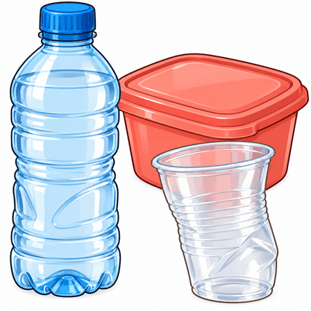
Several molded plastic containers indicate the shared material, not just bottle.
85.5 KB · 448×448Inspect at the real app sizes. Hide labels to judge the picture before reading its intended meaning.

Several molded plastic containers indicate the shared material, not just bottle.
85.5 KB · 448×448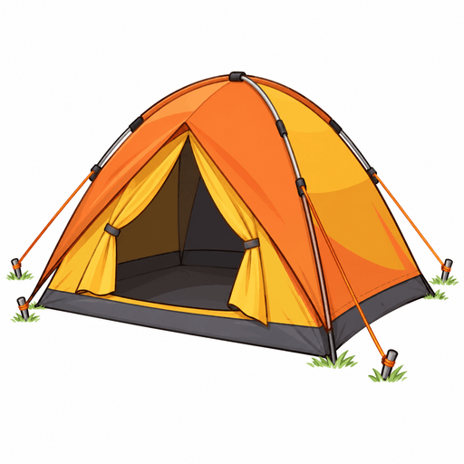
Poles, pegs and open flap identify a camping tent.
97.6 KB · 512×512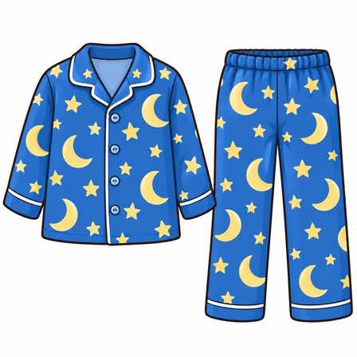
Matching top/trousers with moon motifs distinguish bedtime clothing.
97.5 KB · 448×448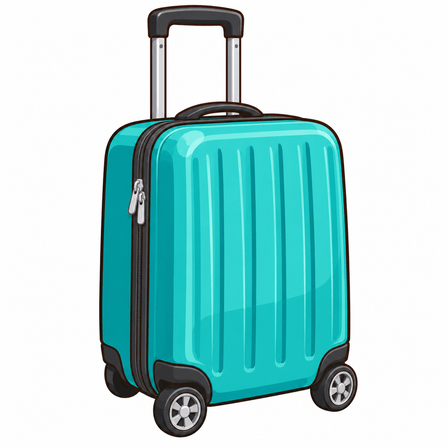
Wheels and extended handle distinguish travel luggage from a backpack.
92.1 KB · 448×448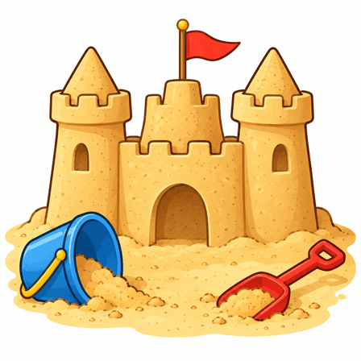
Bucket, spade and loose sand distinguish it from a stone castle.
99.2 KB · 448×448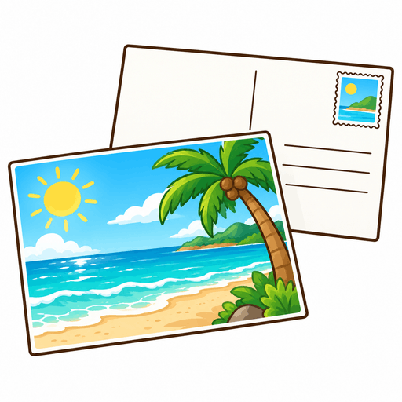
Picture side plus address side distinguish a postcard from a photograph/envelope.
89.8 KB · 512×512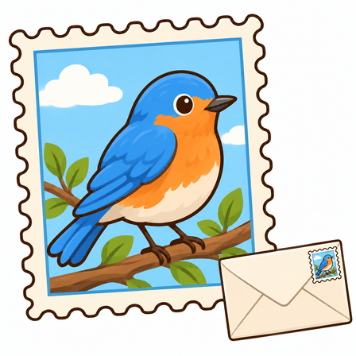
Perforated edge and a small stamped envelope show postal use.
84.2 KB · 448×448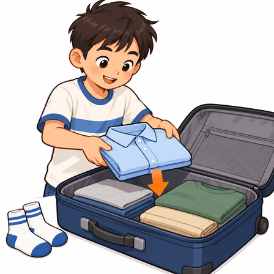
Downward arrow and clothes entering a suitcase distinguish packing from unpacking.
80.6 KB · 448×448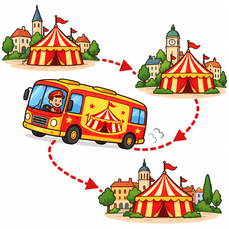
Circus bus visits several cities; distinct from a single holiday destination.
79.3 KB · 448×448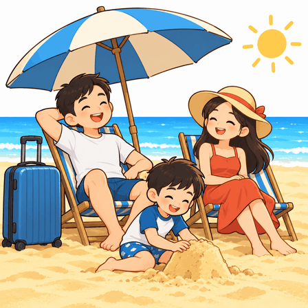
Family leisure at the seaside plus luggage provide holiday context.
84.7 KB · 448×448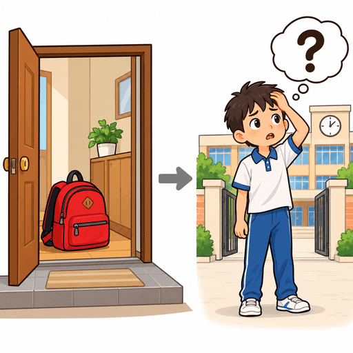
Bag left at home, child at school without it; distinct from remembering before leaving.
87.8 KB · 512×512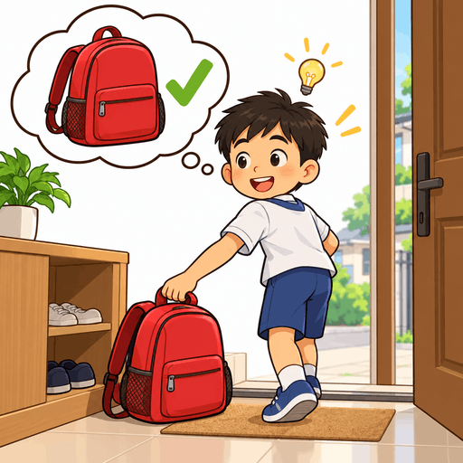
Recalled bag in thought bubble and collection at the door show successful recall.
99.3 KB · 512×512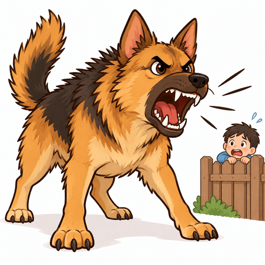
The threatening dog is dominant; the child only explains its effect.
95.7 KB · 448×448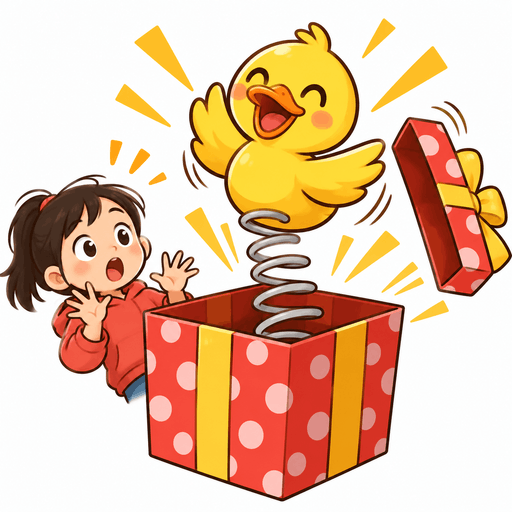
An unexpected pop-out event is dominant; the child explains its effect.
100.0 KB · 512×512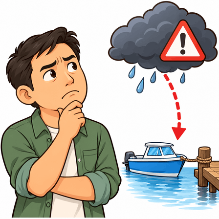
Approaching storm threatens a future trip; concern about what may happen.
77.1 KB · 448×448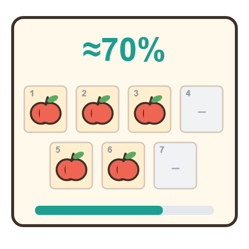
Seven opportunities with larger apple symbols. 1×/2× indicate exact repetition; approximate percentages illustrate often/sometimes, not fixed definitions.
7.7 KB · 512×512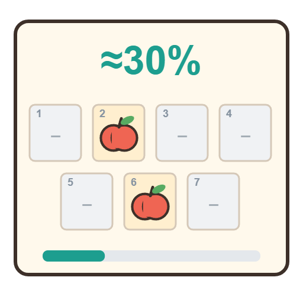
Seven opportunities with larger apple symbols. 1×/2× indicate exact repetition; approximate percentages illustrate often/sometimes, not fixed definitions.
7.6 KB · 512×512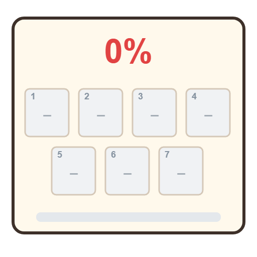
Seven opportunities with larger apple symbols. 1×/2× indicate exact repetition; approximate percentages illustrate often/sometimes, not fixed definitions.
4.7 KB · 512×512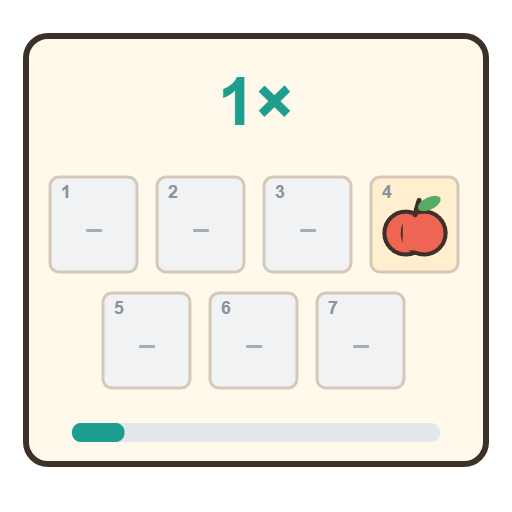
Seven opportunities with larger apple symbols. 1×/2× indicate exact repetition; approximate percentages illustrate often/sometimes, not fixed definitions.
5.3 KB · 512×512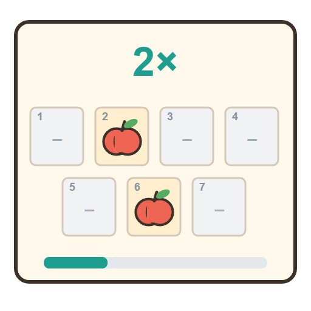
Seven opportunities with larger apple symbols. 1×/2× indicate exact repetition; approximate percentages illustrate often/sometimes, not fixed definitions.
6.6 KB · 512×512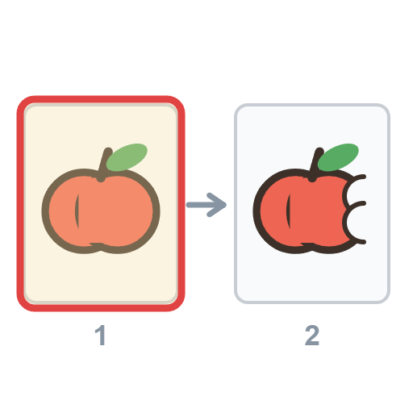
Same whole-apple → bitten-apple timeline; red frame identifies the earlier/later state. Revised to avoid an hourglass-like core.
6.7 KB · 512×512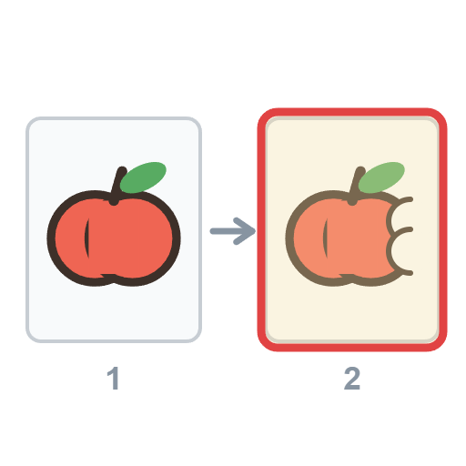
Same whole-apple → bitten-apple timeline; red frame identifies the earlier/later state. Revised to avoid an hourglass-like core.
6.9 KB · 512×512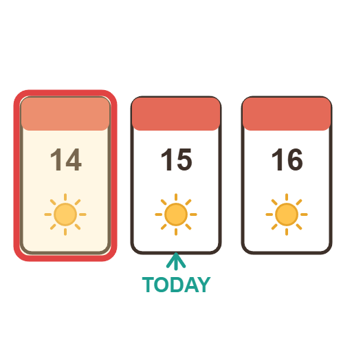
Past date/week outlined relative to TODAY; moon distinguishes last night from yesterday.
6.9 KB · 512×512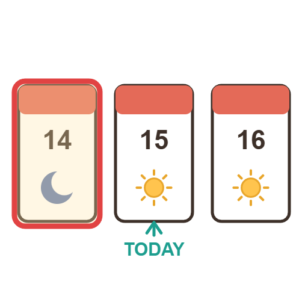
Past date/week outlined relative to TODAY; moon distinguishes last night from yesterday.
6.5 KB · 512×512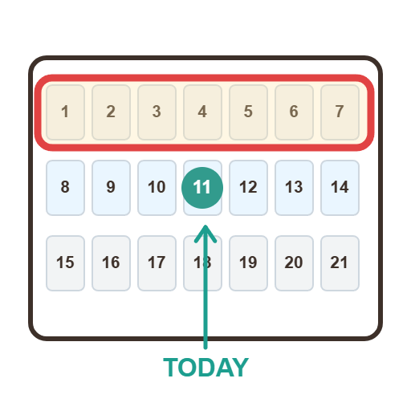
Past date/week outlined relative to TODAY; moon distinguishes last night from yesterday.
7.7 KB · 512×512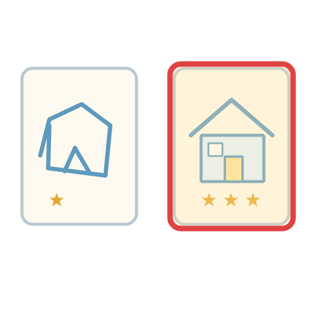
Same house-drawing task: rough versus accurate, with one versus three stars. Red frame chooses the quality.
5.7 KB · 512×512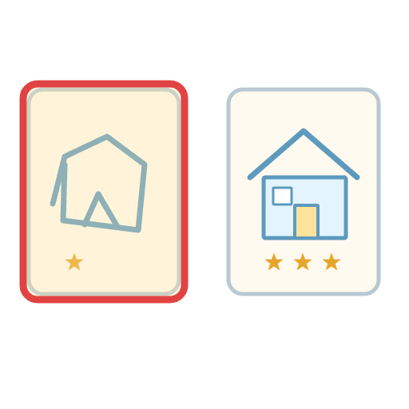
Same house-drawing task: rough versus accurate, with one versus three stars. Red frame chooses the quality.
5.7 KB · 512×512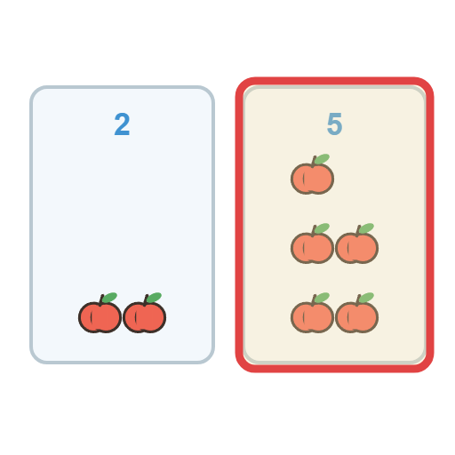
More compares two piles; most/least compare three. Highlighted pile encodes the target without printing it.
6.6 KB · 512×512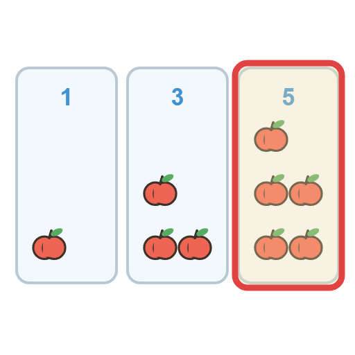
More compares two piles; most/least compare three. Highlighted pile encodes the target without printing it.
7.0 KB · 512×512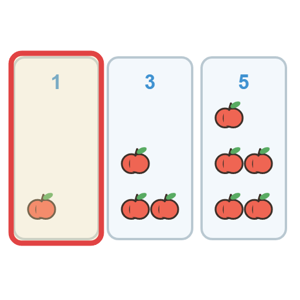
More compares two piles; most/least compare three. Highlighted pile encodes the target without printing it.
6.7 KB · 512×512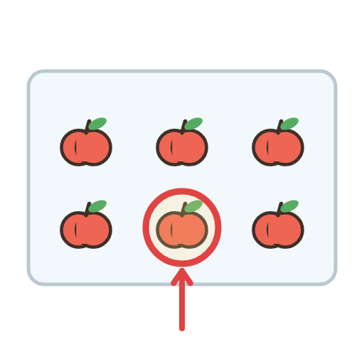
One highlighted apple remains inside a group of six identical apples; not the largest or a separate object.
6.3 KB · 512×512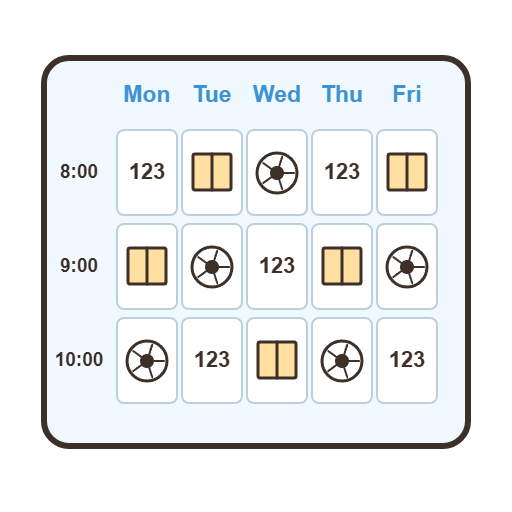
School subjects against weekdays and lesson times; subject icons distinguish it from a plain calendar.
8.4 KB · 512×512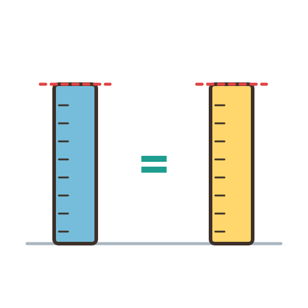
Two rulers share a baseline: equal heights for as, visibly unequal heights for not as.
1.6 KB · 512×512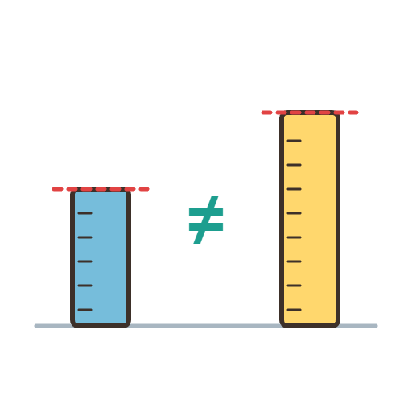
Two rulers share a baseline: equal heights for as, visibly unequal heights for not as.
2.1 KB · 512×512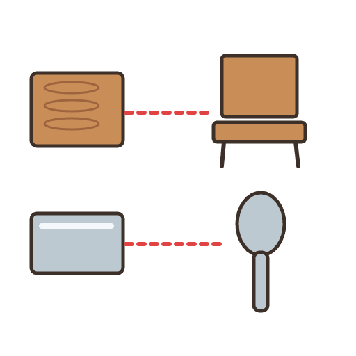
Wood/chair and metal/spoon pairs use dotted material callouts. No transformation arrows that suggest make/build.
3.4 KB · 512×512